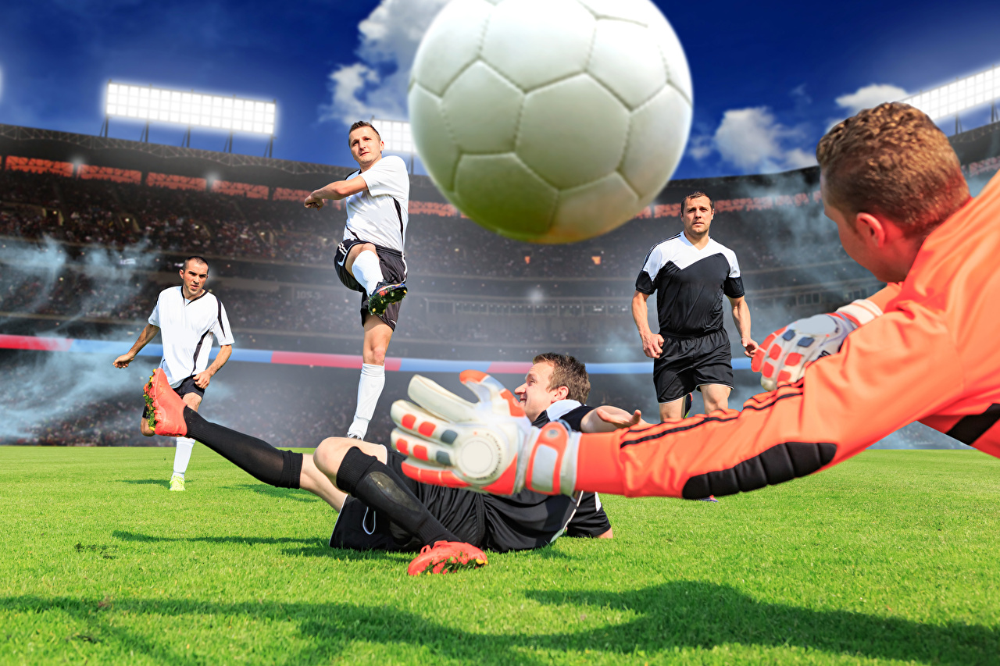

Football is a family of team sports that involve, to varying degrees, kicking a ball to score a goal. Unqualified, the word football normally means the form of football that is the most popular where the word is used. Sports commonly called football include association football (known as soccer in North America and Oceania); gridiron football (specifically American football or Canadian football); Australian rules football; rugby union and rugby league; and Gaelic football.[1] These various forms of football share to varying extent common origins and are known as "football codes". There are a number of references to traditional, ancient, or prehistoric ball games played in many different parts of the world.[2][3][4] Contemporary codes of football can be traced back to the codification of these games at English public schools during the 19th century.[5][6] The expansion and cultural influence of the British Empire allowed these rules of football to spread to areas of British influence outside the directly controlled Empire.[7] By the end of the 19th century, distinct regional codes were already developing: Gaelic football, for example, deliberately incorporated the rules of local traditional football games in order to maintain their heritage.[8] In 1888, The Football League was founded in England, becoming the first of many professional football associations. During the 20th century, several of the various kinds of football grew to become some of the most popular team sports in the world.

Mana men hozi nega Qatar 22 dedim chunki hozirda 2022-yilda FIFA bolyapti yani jahon chmpionati men birinchi shuni aytib atay deb 1-ga shu mavzuni qoydim yani Qatar 22 hozirda 1-tur boshlanib bolgan bu turda ancha oyinlar boldi lekin bu oyinlarda eng katta hisobga yutgan terma jamoalar Span 7:0 ga g;alaba qozondi France 4:0 ga g'alaba qozondi Angliya 6:2 ga g'alaba qozondi bu oyinlar juda zor ketti hozirda yana oyinlar oldinda shunga Koting va zavqlning bundan keyingi oyinlarda yana katta g'alabalarga boy oyin boladi deb oylayman lein hozir men sizlrga enh katta g'alabalarni aytib ottim endi men sizlarga eng ayanchili mag'lubiyatni aytamana u Argentina 1:2 ga Argentima Saudiya Arabiya terma jamoasiga mag'lubiyatga uchradi nega men bu Match ni eng ayanchili dedim chunki Messi bo Terma jamoa mag'lubiyatga uchragani uchun men bu Matchni eng ayanchili deb tapdim qatar 22 da bundan qiziq Match lar boladi hali hammasi oldinda lekin men maslan jahon chempionatida Brazli yutadi deb oylayman

Mana hozirda FIFA22 Ibn Ansu Ali stationida bolyapti uning rasmi tepada turibda u juda chiroyli station va ancha katta bolib 90mga 120 boladi va bemalol futbol oynasa boladi bu station anyan Jahon Chempionatin uchun shxsiy qurilgan va tshqi korinishi judaham chiroyli bolib va tashqi korinishidan ham ancha katta korinadi bu station va yonlatida saylgoh bololar uchun maydon va albatta sig'amgan tomashbinlarga kursilar bor tashqaridagi tomoshabinlarga korinmasaham eshrilishi uchun gol bolganda baland ovozda sharxlovichi baqiqrishi kerak bu narsa rejalshtirilib chiqilgan va gol biilganda tasgqaridagi tomashbinlar eshtishi uchun sharxlovchi valand baqiradi shun bilan bu station mashhur bolib ketti qurilishi bilan bu station qurildi JCH bishlanmasidan bu stationda oyinlar oynalishni boshlandi bu zor mashuhrlik
A guruh Ekvador B guruhda Angliya C guruhda Saudiya Arabiya D guruhda E guruhda Spain F guruhda Belgiya G guruhda Shvitsariya H guruhda No'malum Bu guruhlar ozlarini jamoalarida Fovaridlar h guruh nega no'malum chunki hali h guruhda oyin bolnadi lekin hozi h guruh oyini bolyapti hozi qaysi club yutsa osha fovarid boladi lekin bu clublar zor oyin korsatdilar
Mana bu rasmdagilar Span terma jamosi bu terma jamoa FIFA22 yani Qatar 22 da JCH ga nomzod yani fovarid jamoa nega Span fovarid desangiz chunki hozirda eng katta hisob bilan yutgan club va bali hgam hamma terma jamoalrdan kop bal yeg'gan terma jamoa uning hisobi 7:0 bolib costarika ustidan g'alaba qozongan terma jamoa u eng jatta hisob bilan g'alaba qozongani uchun u fovarid bilob turibdi lekin hali hammasi oldinda bu degani kubog Spaniki degani mas masalan men bu JCH da Brazilga balet qilaman mwn Brazli yutaadi deb oylayman lekin Span ham zor gollar bilan boshlashdi va zor hisob bilan g'alaba qozondi Span
JCH tugandan keyin nima boladi degan savolga men buunday deb javob beraman JCH tufayli Chempionlar ligasi toztatilgan JCH tugagandan keyin chempionlar ligasi boshlaniodi va unda ham JCH dek mazza qilib futbol koramiz nega JCH tufayli Chempionlar lihasi tozxtatilgan chunki boshqa futbolchilar jam JCH ham Chempionlar ligasi boladi va futbolchilar bularga ulgirolmay qolishadi va JCH ni oynab bolib chempionlar ligasida charchab yutqazib qoyishmasin deb biri boshlanganda biri toxtaliladigan bolgan
Mana meni taxminim boyicha JCH ni Brazil terma jamoasi oladi chunki u terma jamoda juda kuchli va tez futbolchilar bor yana men Brzalini oyinini olidingi JCH da korib qoyil qolgan edim va oldingi JCH da Brazli zor oynagan lekin JCH kubogini lolmagan shuning uchun bu JCH da comebac qilib bu yilgi JCH kubogini oladi deb oylayman
Chempionlar ligasi bu judaham butun dunyoga tanish liga lekin bu JCH ga oxshab termalar bilan oynalmaydi bu ligada clublar bilan oynaladi va 1 mavsumni tugash arafasida bu liga boshlanadi mavsumni oxirida bu ligani finali boladi u finalda eng zor oynagan 1-2-orinlar finlaga chiqib bu ligada oyin olib borishadi va finalda yutgan ligani kubogini olib ketadi shunday qilib chempionlar ligasi oynaladi va bu lligada
.jpg)
Men nega bu mavsumga real madrid rasmini qoydim chunki oldingi ligada real madeid leverpulni ustidan g'alaba qozonib liga kubogini olgan club Finalda Livepul vs Real madrid cluublari chiqgan Livepul ustidan real g'alaba qozongan shuning uchun men realni rasmini qoydim bu mavzuga
mana bu JCH da eng zor urilgan gol bunday usulda hali hech kim JCH da gol urmagan
Mana bu mening kanalimni profilimdagi rasmi mening kanalimda hamma oyinlar sharxlanadi va gollarning videolari tashlaib turadi va exsteremal va zoer va zini qoyil qoldiradigan yangiliklarni korsangiz boladi u kanalda kanal admini shaxsan ozim bu kanalni ozim ochganman bu kanal faqat futbol yangiliklariga va bu kanalni ismi Football News
https://t.me/+rLelNo8cxIxlNGNi mana bu meni kanalimni lekinki